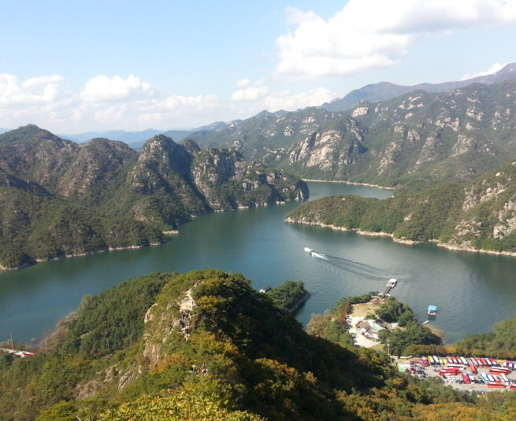

제비봉

주요특징 및 설명
유형: 산봉우리
위치: 충북 단양군 단성면 장회리 산1 일원
해발고도: 721m
주요 특징
제비봉은 바위 능선이 마치 제비가 날개를 활짝 펴고 하늘을 나는 모습처럼 올려다 보여 이름 붙여졌다. 특히, 장회나루에서 유람선을 타고 볼 수 있는 수상관광지이다.
제비봉에서 서북쪽에서는 충주호가 내려다보이고 동쪽에서는 소백산 줄기가, 북쪽에서는 금수산이 보인다.